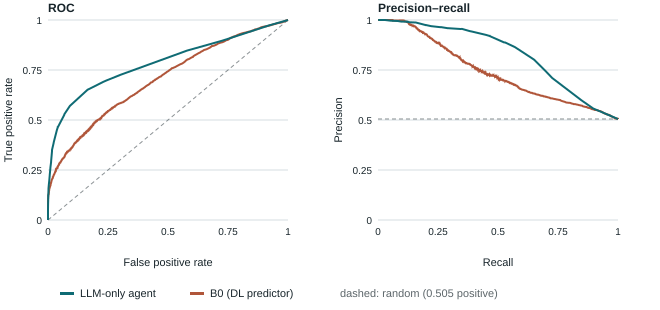

PRING classification test: LLM-only agent vs DL predictor
Can an LLM agent with no PPI predictor and no web access classify held-out protein pairs as well as a deep-learning predictor, on the same benchmark?
1. Benchmark and protocol
PRING human breadth-first split. Train (76,400 labelled pairs, 7,750 proteins) is the agent's knowledge base; validation is kept for the later self-improvement stage. The test split has 64,038 labelled pairs among 2,018 proteins (1:1, 1,891 self pairs, all positive), and no test protein is in the knowledge base. A random sample of 10,000 test pairs (seed 0; 5,051 positive, 283 self pairs) was scored.
Each batch of 200 pairs is one fresh LLM session. The agent sees the pair list with gene names, may make up to 80 calls to four tools (protein annotation, annotation search, knowledge-base homologs, and the labelled knowledge-base pairs of a protein), and returns one probability per pair. The prompt does not state the share of positives. B0 scores the same pairs from ESM-3 sequence features.
2. Results
Accuracy, precision, recall, F1 and MCC count decisions at each model's own threshold with the highest F1 on these test labels (an oracle choice: no validation split selects it, because validation is kept for self-improvement); the Threshold column gives that probability (raw sigmoid for B0). AUPR (average precision) and AUROC use only the ranking; ECE (15 bins) and Brier measure calibration.
Table 1. Binary classification on the PRING human BFS test sample, all 10,000 pairs, same pairs for both models, threshold metrics at each model's max-F1 test threshold. Bold: better of the two.
| Model | Threshold | Accuracy↑ | Precision↑ | Recall↑ | F1↑ | AUPR↑ | AUROC↑ | MCC↑ | ECE↓ | Brier↓ |
|---|---|---|---|---|---|---|---|---|---|---|
| LLM-only agent | 0.080 | 0.730 | 0.754 | 0.690 | 0.721 | 0.815 | 0.786 | 0.462 | 0.343 | 0.315 |
| B0, ESM-3 DL predictor | 0.038 | 0.576 | 0.548 | 0.916 | 0.686 | 0.740 | 0.703 | 0.200 | 0.207 | 0.268 |
Table 2. The same metrics without self pairs (9,717 pairs).
| Model | Threshold | Accuracy↑ | Precision↑ | Recall↑ | F1↑ | AUPR↑ | AUROC↑ | MCC↑ | ECE↓ | Brier↓ |
|---|---|---|---|---|---|---|---|---|---|---|
| LLM-only agent | 0.080 | 0.722 | 0.738 | 0.673 | 0.704 | 0.800 | 0.776 | 0.445 | 0.333 | 0.309 |
| B0, ESM-3 DL predictor | 0.038 | 0.563 | 0.532 | 0.911 | 0.672 | 0.703 | 0.685 | 0.190 | 0.213 | 0.276 |
Table 3. Agent − B0 on the same pairs, with paired bootstrap 95% intervals (1,000 resamples). Higher favours the agent.
| Pairs | ΔAUROC | ΔAUPR |
|---|---|---|
| All pairs | +0.083 [0.072, 0.094] | +0.075 [0.065, 0.085] |
| Self pairs removed | +0.091 [0.079, 0.102] | +0.096 [0.085, 0.107] |
Table 4. Published reference values on the full 64,038-pair test (other pairs and thresholds; not directly comparable): PRING Table 8 and the motif-graph TUnA report (validation-selected threshold).
| Model | Accuracy↑ | Precision↑ | Recall↑ | F1↑ | AUPR↑ | AUROC↑ | MCC↑ |
|---|---|---|---|---|---|---|---|
| PPITrans (PRING) | 0.674 | 0.657 | 0.738 | 0.694 | 0.769 | — | — |
| TUnA (PRING) | 0.647 | 0.676 | 0.563 | 0.614 | 0.720 | — | — |
| PLM-interact 650M (PRING) | 0.671 | 0.735 | 0.534 | 0.619 | 0.707 | — | — |
| TUnA (motif-graph report) | 0.644 | 0.623 | 0.731 | 0.673 | 0.728 | 0.713 | 0.293 |

Reading
- The agent ranks pairs better than B0: AUPR 0.815 vs 0.740, AUROC 0.786 vs 0.703 (Tables 1, 3).
- Self pairs do not explain the gap: without them, ΔAUPR is +0.096 (Tables 2, 3).
- At each model's best-F1 threshold the agent also leads: F1 0.721 vs 0.686, MCC 0.462 vs 0.200; B0's best F1 needs a low threshold that finds 92% of positives at specificity 0.228 (Table 1).
- The agent is poorly calibrated: its best threshold is p = 0.08, not 0.5, and ECE is 0.343 vs 0.207; it was not told that half the pairs interact (Table 1).
- The gap may be memory, not reasoning: PRING labels are public and the agent sees gene names; no name-blind control has run.